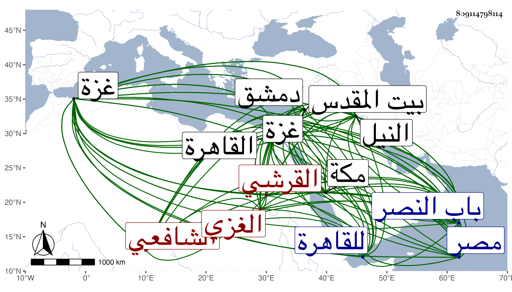

0902Sakhawi.DawLamic.ITO20230111-ara1.EIS1600.809114798114
Biography ID: 809114798114
إبراهيم بن محمد بن بهادر بن أحمد بن عبد الله برهان الدين القرشي النوفلي الغزي الشافعي ويعرف بابن زقاعة بضم الزاي وتشديد القاف ثم مهملة ومنهم من يجعل الزاي سينا مهملة ولد بغزة في أول ربيع الأول سنة خمس وأربعين وسبعمائة كما سمعه منه شيخنا قال وذكر لي من أثق به عنه غير ذلك . قلت وأبعد ما قال سنة أربع وعشرين وتعانى الخياطة في مبدأ أمره وسمع من قاضي بلده العلاء علي بن خلف ومن النور علي الفوي وغيره وأخذ القراآت عن الشمس الحكري والفقه عن البدر القونوي والتصوف عن شخص من بني الشيخ عبد القادر الجيلي اسمه عمر وتولع بالأدب فقال الشعر ونظر في النجوم وعلم الحرف ومعرفة منافع النبات والأعشاب وساح في الأرض لتطلبه والوقوف على حقائقه وتجرد زمانا وتزهد فعظم قدره وطار ذكره وبعد صيته خصوصا في أول دولة الظاهر برقوق فإنه استقدم من بلده مرارا عديدة لحضور المولد النبوي وتطارح الناس على اختلافهم عليه ثم انحل عنه قليلا فلما استبد ابنه الناصر فرج تخصص به وتحول للقاهرة بعد الكائنة العظمى بدمشق فقطنها وسكن مصر على شاطئ النيل وتقدم عند الناصر جدا حتى كان لا يخرج إلى الأسفار إلا بعد أن يأخذ له الطالع ولا يتعدى الوقت الذي يعينه له فنقم عليه المؤيد ذلك ونالته منه محنة في أوائل دولته ثم أعرض عنه واستمر في خموله بالقاهرة حتى مات في ذي الحجة سنة عشرة بمنزله بمصر ودفن خارج باب النصر وأرخه بعضهم في سنة ثماني عشرة وهو غلط . وقد ذكره شيخنا في معجمه وقال إنه جمع أشياء منها دوحة الورد في معرفة النرد وتعريب التعجيم في حرف الجيم وغير ذلك قال وقرأت بخط صاحبنا خليل بن محمد المحدث يعني الأقفهسي سمعت صاحبنا خليل بن هارون الجزائري يقول سمعت الشيخ محمد القرمي ببيت المقدس يقول كنت يوما في خلوة فسألت الله تعالى أن يبعث لي قميصا على يد ولي من أوليائه فإذا الشيخ إبراهيم ومعه قميص فقال أعطوا هذا القميص للشيخ وانصرف من ساعته قال وأول ما اجتمعت به في سنة تسع وتسعين فسمعت من نظمه وفوائده ثم اجتمعت به بغزة قبل تحوله إلى القاهرة وسمعت كذلك من نظمه وفوائده ثم كثر اجتماعنا بعد سكناه القاهرة وقد حج وجاور وأجاز لي رواية نظمه وتصانيفه منها القصيدة التائية في صفة الأرض وما احتوت عليه وكانت أولا خمسمائة بيت ثم زاد فيها إلى أن تجاوزت خمسة آلاف وكان ماهرا في استحضار الحكايات والماجريات في الحال وفي النظم والنثر عارفا بالاوفاق وكان يخضب بالسواد ثم أطلق قبل موته بثلاث سنين وساق له مما أنشده له من نظمه في قصيدة نبوية :
| غصن بان بطيبة | في حشا الصب راسخ |
| من صباي هويته | وأنا الآن شائخ |
| قمر لاح نوره | فاستضاءت فراسخ |
| عجبا كيف لم يكن | كاتبا وهو ناسخ |
| ذللت حين بعثه | من قريش شوامخ |
| أسد سيف دينه | ذابح الشرك شالخ |
| فاتح مطلب الهدى | وعلى الشرك صارخ |
| ومسيح تحته | طائر القلب نافخ |
| أحمد سيد الورى | وبه شاد شالخ |
| مثل ما شاد فالغ | من قديم وفالخ |
| عقد أكسير وده | ليس لي عنه فاسخ |
| يا نخيلات وجده | إن دمعي شمارخ |
| حرقي دست مهجتي | فالهوى فيه طابخ |
قال وهذا عنوان نظمه وربما ندر له ما هو أفحل منه وقال في أنبائه أنه كان أعجوبة زمانه في معرفة الأعشاب واستحضار الحكايات والماجريات مقتدرا على النظم عارفا بالاوفاق وما يتعلق بعلم الحرف مشاركا في القراآت والنجوم وطرف من الكيمياء وعظمه الظاهر جدا ثم الناصر حتى كان لا يسافر إلا في الوقت الذي يجده له ومن ثم نقم عليه المؤيد ونالته منه محنة يسيرة في أول دولته وشهد عليه عنده جماعة من الطواشية وغيرهم بأمور منكرة فأغضى عنه وقال إنه جاور في هذا العشر يعني الذي مات فيه سنة بمكة قال ونظمه كثير وغالبه وسط ويندر له الجيد وفيه السفساف وكتب إليه في سنة تسع وتسعين :
| تطلبت إذنا بالرواية عنكم | فعادتكم إيصال بر وإحسان |
| ليرفع مقداري ويخفض حاسدي | وأفخر بين الطالبين ببرهان |
فأجاب مخطئا للوزن في البيت الثاني :
| أجزت شهاب الدين دامت حياته | بكل حديث جاز سمعي بإتقان |
| وفقه وتاريخ وشعر رويته | وما سمعت أذني وقال لساني |
وقال التقي المقريزي اجتمع بي بعد طول امتناعي من ذلك وأنشدني كثيرا من شعره وملأ آذاني بهذيانه وهذره ونقل عنه في عدد قصيدته المشار إليها أنها سبعة آلاف وسبعمائة وسبعة وسبعون بيتا وكان مكثارا مهذارا يؤثر عنه مخاريق وشعبذة ولآخرين فيه اعتقاد ويتلقون عنه كرامات . قلت وآخرون كانوا يعتقدون علمه وفضله ومن الصوفية من كان يزعم أنه يعلم الحرف والاسم الأعظم بل وصفه الجمال بن ظهيرة وناهيك به بشيخنا الإمام العلامة شيخ الطريقة والحقيقة وشعره سائر ومنه مما كتبه عنه الجمال المشار إليه في سنة إحدى عشرة :
| ومن عجبي أن النسيم إذا سرى | سحيرا بعرف البان والرند والآس |
| يعيد على سمعي حديث أحبتي | فيخطر لي أن الأحبة جلاسى |
ومما كتبه عنه أبو السعادات بن ظهيرة فيما قال :
| رأى عقلي ولبي فيه حارا | فأضرم في صميم القلب نارا |
| وخلاني أبيت الليل ملقى | على الأعتاب أحسبه نهارا |
| إذا لام العواذل فيه جهلا | أصفه لهم فينقلبوا حيارى |
| وإن ذكروا السلو يقول قلبي | تصامم عن أباطيل النصارى |
| وما علم العواذل أن صبري | وسلواني قد ارتحلا وسارا |
| فيا لله من وجد تولى | على قلبي فأعدمه القرارا |
| ومن حب تقادم فيه عهد | فأورثني عناء وانكسارا |
| قضيت هواكم عشرين عاما | وعشرين ترادفها استتارا |
| فنم الدمع من عيني فأبدى | سرائر سر ما أخفى جهارا |
| إذا ما نسمة البانات مرت | على نجد وصافحت الغرارا |
| وصافحت الخزام وعتقوانا | وشيحا ثم قبلت الجدارا |
| جدار ديار من أهوى قديما | رعى الرحمن هاتيك الديارا |
| ألا يا لائمي دعني فإني | رأيت الموت حجا واعتمارا |
| فأهل الحب قد سكروا ولكن | صحا كل وفرقتنا سكارى |
وله في قصيدة يمدح بها البرهان بن جماعة :
| لملة أحمد برهان دين | يقوم بحفظها في كل ساعه |
| فمت في حبه إن شئت تحيا | فذا البرهان قد أحيا جماعه |
وله مما زعم بعض مريديه أن فيه الاسم الأعظم :
| سألتك بالحواميم العظيمه | وبالسبع المطولة القديمه |
| وباللامين والفرض المبدا | به قبل الحروف المستقيمه |
| وبالقطب الكبير وصاحبيه | وبالأرض المقدسة الكريمه |
| وبالغصن الذي عكفت عليه | طيور قلوب أصحاب العزيمه |
| وبالمسطور في رق المعاني | وبالمنثور في يوم الوليمه |
| وبالكهف الذي قد حل فيه | أبو فتيانها ورأى رقيمه |
| وبالمعمور من زمن النصارى | بأحجار بعجرتها مقيمه |
| ففجر في فؤادي عين حب | تروي في مشارحها صميمه |
وقد لقيت غير واحد من أصحابه منهم محمد بن أحمد بن علي الغزولي الحنبلي وأنشدنا عنه ما سأورده في ترجمته إن شاء الله وكذا روى لنا عنه الموفق الأبي قصيدة من نظمه أولها :
| سلام كلما دارت | ببدر التم داراته |
وأخرى أولها :
| سقى عقيق الأجرع | غيث عقيق أدمعي |
سمعهما منه هو والجمال بن موسى المراكشي الحافظ وكتب عنه البرهان الحلبي من نظمه :
| إلهي أنت فوق رجا المرجي | فهب لي قبل أن ألقاك توبه |
| فإن العفو عن زلات جان | أحب إلى الكريم من العقوبه |
وقوله مما ينقل من مشيخة البرهان لشيخنا مع كلام البرهان فيه قد حكاه لنجم بن فهد في المشيخة التي خرجها للبرهان فقال اجتمعت به في مدينة غزة في قدمتي إليها في ربيع الآخر سنة اثنتين وثمانين وسبعمائة فوجدته رجلا صالحا كثير المعروف ووقت جلوسي عنده دق عليه الباب مرات ويخرج ويجيء وهو مسترزق من العقاقير وبعض الناس من أهل غزة يقولون أنه ينفق من الغيب وهو رجل فاضل يعرف قراآت ويصف أشياء للأوجاع كالأطباء ويطلب منه الدعاء وقد طلب مني أحاديث يسمعها علي فانتقيت له أحاديث من كتاب العلم لأبي خيثمة زهير بن حرب وسمعها علي في القدمة الثالثة وسمعت أنا عليه وقرأت أيضا بعض شيء من شعره وأجاز لي ما له من نظم ونثر وممن ذكره باختصار المقريزي في عقوده .
